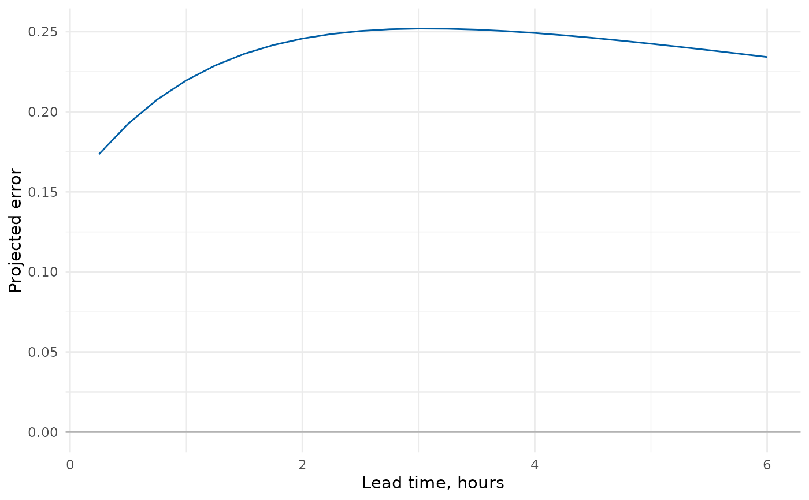

Project future model error one timestep at a time from a supplied recent error history and AR parameter set.
Arguments
- x
An AR parameter object.
- ...
Additional method arguments. The current AR-parameter method does not use additional unnamed arguments.
- initial_errors
Numeric recent errors supplied newest first. The vector length must equal the AR order. For AR(3), supply errors at times
t-1,t-2andt-3in that order.- steps
Positive whole number of future timesteps to calculate.
- time_step_minutes
Positive number of minutes represented by one model timestep. It controls reported lead times but not the recurrence itself.
Value
An AR forecast result. Use forecast_series() to obtain its table.
Examples
parameters <- default_ar_parameters()
forecast <- forecast_ar(
parameters,
initial_errors = c(0.15, 0.12, 0.10),
steps = 24L,
time_step_minutes = 15
)
head(forecast_series(forecast))
#> step lead_time_minutes lead_time_hours ar_error
#> <int> <num> <num> <num>
#> 1: 1 15 0.25 0.1735344
#> 2: 2 30 0.50 0.1924720
#> 3: 3 45 0.75 0.2075853
#> 4: 4 60 1.00 0.2195501
#> 5: 5 75 1.25 0.2289219
#> 6: 6 90 1.50 0.2361593
plot_ar(forecast)
